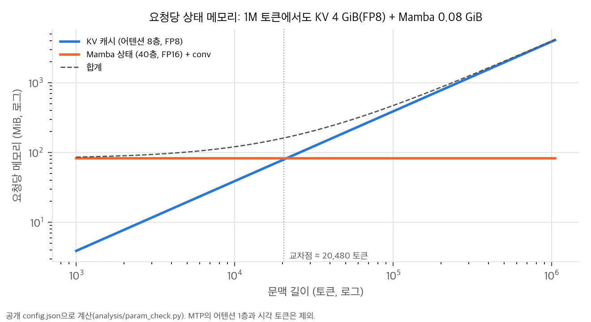
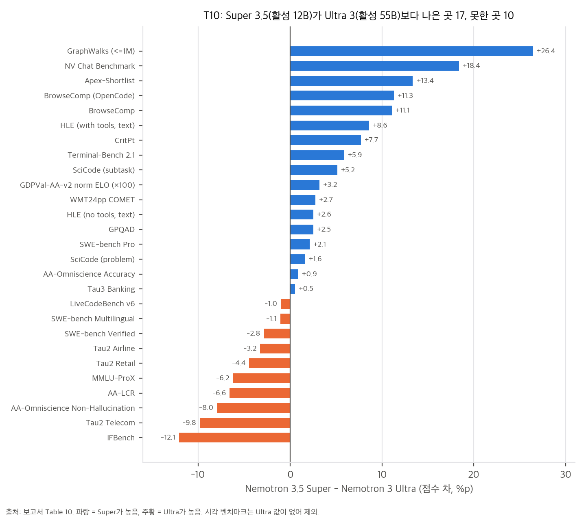
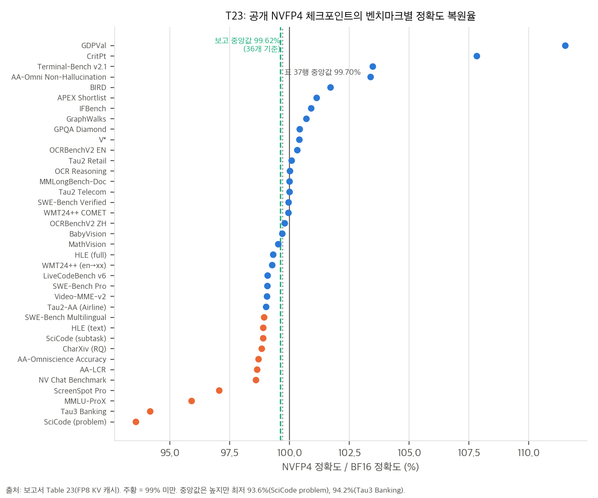
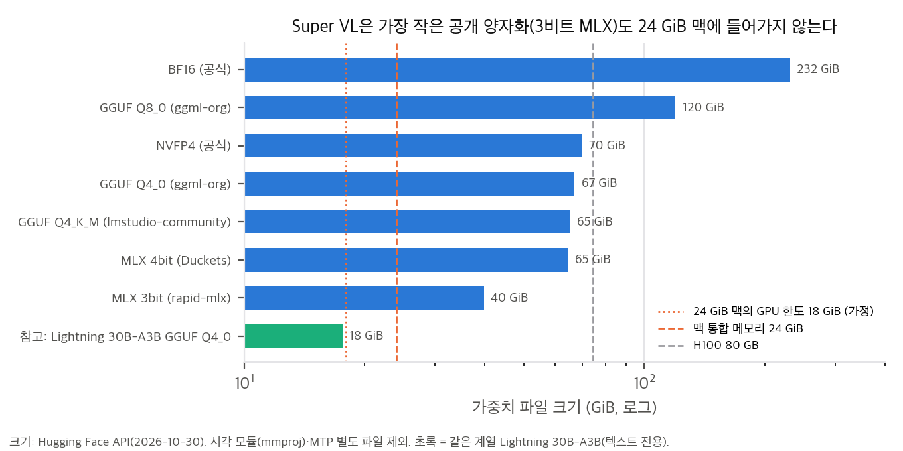

02 §4), 학습·평가 코드(NeMo 계열)는 Apache-2.0입니다.config.json·safetensors 색인·헤더(가중치는 받지 않음), NVIDIA-NeMo cookbook과 NeMo Gym 평가 레시피도 함께 봤습니다."Lightning"이 가리키는 것. 같은 3.5 세대의 작은 텍스트 전용 모델 Nemotron 3.5 Lightning 30B-A3B입니다(Nano 3 Base에서 초기화, Hugging Face 공개 2026-08-01). 이 보고서는 두 모델을 함께 다루지만 분량은 대부분 Super VL에 씁니다. Lightning은 증류, MTP, 양자화(§4.9), 병렬 drafter(DFlash, DSpark) 부분에만 나옵니다. 이 저장소의
lightning_grasp/(로봇 grasp 논문)와는 관계가 없습니다.
한 줄 요약: Nemotron 3 Super(120B-A12B, 텍스트)를 출발점으로, Ultra 3 Base에서 1T 토큰 증류 → Indic 계속 사전학습 → 1M 문맥 → 256K 문맥 SWE 중간학습을 거친 뒤, 사후학습 단계에서 시각 입력을 붙이고 전문 교사 여러 개를 MOPD로 합쳐 멀티모달 에이전트 모델로 만들었습니다. 그다음 **NVFP4 양자화와 vLLM 서빙 최적화(ReplaySSM, Mamba 체크포인트 prefix caching)**까지 한 보고서에 담았습니다.
보고서가 내세우는 수치(초록, §1)는 다음과 같습니다.
04 C8).보고서 본문은 "120B total, 12B active, hybrid Mamba/attention, 512 routed experts, MTP"(§4.2)라고만 적고 층 구성을 표로 주지 않습니다. 아래 값은 공개 config.json과 safetensors 헤더에서 읽었습니다(analysis/param_check.py, 04 D5).
| 항목 | 값 |
|---|---|
| 층 | 88층 = Mamba-2 40 + LatentMoE 40 + attention 8. 패턴 MEMEMEM*EMEMEMEM*… (attention은 대략 11층마다 1개) |
| LatentMoE | hidden 4096 → latent 1024로 줄인 뒤 routed expert 512개 중 top-22, expert 중간 차원 2688, shared expert 1개. 라우터 계산은 FP32 |
| Attention | query 32헤드, KV 2헤드, head_dim 128 (GQA 16:1) |
| Mamba-2 | 128헤드 × 64, 상태 128, 그룹 8 |
| 문맥 | 최대 1,048,576 토큰 |
| 어휘 | 131,072 |
| 시각 | C-RADIO v4-H (ViT-H/16, 32층, 폭 1280, 최대 패치 13,312, 2×2 다운샘플) + projector(중간 20,480) |
| MTP | 재귀적으로 공유하는 MTP 층 1개(attention + MoE). lm_head는 본체와 공유 |
| 파라미터 | 전체 124.45B(보고서 BPE 계산의 N과 일치) = LLM 120.67B + MTP 2.94B + 시각 0.65B + projector 0.19B. routed expert가 전체의 90.6% |
| 활성 | 토큰당 12.2B(임베딩 제외) / 12.8B(포함). 이름의 "A12B"와 맞음 |
Nemotron 3 Super Base (25T 사전학습, arXiv:2604.12374)
│ MTP 초기화: 원래 MTP 헤드 2개 중 첫째만 남겨 재귀 공유 헤드 1개로 (§2.1)
│ MTP warm-up 100B 토큰 (본체 동결) + hidden-state mixing
▼
증류 1T 토큰 ← 교사 Ultra 3 Base (550B-A55B) §2.2
│ Skew Reverse KL (α = 0.1), top-128 logit + sink 토큰, KL 0.9 + CE 0.1
│ LR 4.5e-6 → 4.5e-5 (200B 토큰 동안 증가) → 4.5e-6 (800B 동안 선형 감소)
▼
Indic 계속 사전학습 100B (Indic 10% + 직전 혼합 90%) §2.3
▼
장문맥 1M, 35B 토큰 (CP16 × TP8 × EP64, GB300) §2.4
▼
SWE 중간학습 65.4B 토큰 @256K (T4 혼합) §2.5
▼
장문맥 회복 9B 토큰 (RULER-1M 79.9 → 33.5 → 81.0) §2.4
= Nemotron 3.5 Super Base
Lightning은 Nano 3 Base에서 시작해 Super 3 Base를 교사로 1T 증류(forward KL)하고, 장문맥 21B만 거칩니다. Indic CPT와 중간학습은 없습니다(§2.2, §2.4).
MTP의 train–inference 불일치(§2.1). 재귀 MTP를 표준 방식으로 학습하면 k번째 단계는 정답 은닉 상태로만 학습하지만, 추론에서는 앞선 MTP 단계가 만든 합성 상태를 입력으로 받습니다. Super는 학습 중 k번째 단계의 입력을 1…k−1 단계 출력에서 섞어 뽑는 hidden-state mixing으로 이 차이를 줄였습니다. 여러 단계를 실제로 펼쳐 학습하는 TTT보다 계산이 적다는 것이 근거입니다.
사전학습은 짧은 문맥이라 저장소 전체, 이슈–PR, 커밋 이력, 빌드 로그를 담기 어렵습니다. SFT는 대부분 합성 데이터이고, 너무 길면 이후 RL 이득을 줄입니다. 중간학습은 그 사이에서 자연 SWE 데이터를 256K 문맥으로 학습합니다.
| 혼합(T4) | 비율 |
|---|---|
| 이슈–PR(저장소 맥락 + 병합 패치) | 41% |
| 저장소 전체(서로 import하는 파일을 붙여서) | 20% |
| 사전학습 재생 | 20% |
| 에이전트 궤적(도구 응답은 loss mask) | 10% |
| 장문맥 데이터 | 5% |
| 커밋 diff | 3% |
| 빌드·CI 로그 | 1% |
효과는 같은 실험용 SFT(33B 토큰, 2K step)를 base와 중간학습 체크포인트에 각각 돌려 비교했습니다(T5). OpenHands 하네스에서는 차이가 ±1점(실행 간 변동 수준)입니다. 다른 5개 하네스에서는 SWE-bench Verified가 평균 +8.6점, Terminal-Bench 2.1이 평균 +6.8점 올랐습니다(재계산 8.56, 6.82). 가장 큰 개선은 Codex 하네스입니다(48.4 → 61.8). DeepSWE는 6.4 → 10.4입니다. 다시 말해 중간학습의 주효과는 점수보다 하네스 간 강건성입니다.
Super 3.5 Base (텍스트 전용)
│ vision projector warm-up
▼ SFT 2단계 (§3.1): 1단계 = 시각·추론·대화·장문맥·안전·에이전트 혼합, 2단계 = 부족한 능력 보강
│ packing 524,288 토큰, GBS 32, LR 1e-5 고정, MTP 보조 loss 0.3
▼ RL (§3.2): RLVR + RLHF 동시, GBS 8,192 × rollout 16, 최대 생성 80K → 128K
│ router replay, FP32 LM head (학습·추론 엔진 간 KL 오차를 10배 이상 줄임)
▼ step-120 체크포인트에서 교사들을 가지치기
├─ 에이전트 교사 (§3.3.1): Terminal·SWE·Search 샌드박스, GRPO 64 × 16, rollout당 최대 2시간
├─ 추론 교사 (§3.3.2): 25,600문항(과학 90%), 생성 131,072, 80 update
├─ 비디오 추론·추적 교사 (§3.4.1): Video-QA + SA-V 추적, 라우터·시각 모듈 동결, step 60
├─ 시각 도구 사용 교사 (§3.4.2), 시각 추론 RLVR (§3.4.3)
└─ 정렬 교사 (§3.5): 길이 벌칙을 넣은 GenRM, 고정 참조 응답(Gemma 4 31B-it)과 비교
▼ MOPD 2단계 (§3.6)
▼ MTP boosting (§3.7, 본체 동결)
= Nemotron 3.5 Super (BF16) → NVFP4 PTQ + QAD (§4)
학생이 직접 생성한 응답의 각 토큰에서, 그 도메인을 맡은 교사의 확률과 학생 확률의 로그 차이를 advantage로 씁니다.
Δθ ∝ E_{y ~ π̄_S(·|q)} [ Σ_t Â_t ∇θ log π_S(y_t | c_t) ] (Eq. 1)
Â_t = sg[ log π_T(y_t | c_t) − log π̄_S(y_t | c_t) ] (Eq. 2)
03 §4에서 확인).본체를 동결하고 MTP 헤드만 두 번 학습합니다. SFT 체크포인트에서 4k step을 먼저 학습하고, 최종 체크포인트에서 25k step을 더 학습합니다. hidden-state mixing을 유지하고, loss를 CE 대신 **동결 본체를 교사로 한 증류(LK loss)**로 바꿨습니다. 데이터는 본체가 temp 1로 생성한 on-policy rollout(8K 토큰 상한)입니다.
| draft 길이 7, SPEED-Bench | greedy AL | sampling AL |
|---|---|---|
| 최종 체크포인트, 원래 MTP | 4.287 | 3.787 |
| + SFT 단계 MTP 헤드 이식 | 4.528 | 4.436 |
| + 25k boosting | 4.718 (+10.1%) | 4.612 (+21.8%) |
깊은 draft 위치일수록 개선이 큽니다(F6). 다만 T9에서 boosting 후 Super의 greedy AL 평균 4.718은 Gemma-4 31B(4.837)와 Qwen3.5 122B(4.799)보다 낮습니다. sampling AL 4.612는 가장 높습니다.
목표: 중앙값 정확도 복원율 99% 이상, 출력 길이 증가 5% 이하. Super VL NVFP4는 Blackwell에서 W4A4, 그 밖에서는 W4A16으로 배포하고, Lightning은 어디서나 W4A16입니다.
| 모듈 (T12) | 공개 레시피(Aggressive) |
|---|---|
| C-RADIO, VL connector, 임베딩, Mamba conv | BF16 |
| routed + shared expert GEMM | NVFP4 |
| latent down/up projection | BF16 |
| attention QKV·out, Mamba linear, lm_head | FP8 |
| KV cache, BMM | FP8 |
| Mamba SSM cache | FP16 + stochastic rounding |
| 전체 BPE | 4.82 (S = 74.987 GB, N = 124.453B) |
03 §2에서 정확히 4,096으로 재계산), Mamba 상태는 4K 토큰 간격으로만 저장됩니다. 투기적 디코딩과 함께 쓰면 최대 4K 토큰을 다시 계산해야 해서, 공유 prefix 경계 근처에 Mamba 체크포인트를 하나 더 두도록 바꿨습니다.| 영역 | Super 3.5 | Ultra 3 | 관찰 |
|---|---|---|---|
| SWE-bench Pro | 51.78 | 49.66 | 표의 7개 모델 중 5위. Qwen3.8 60.37, GLM-5.3 59.70 |
| SWE-bench Verified | 71.10 | 73.93 | 7개 중 7위 |
| Terminal-Bench 2.1 | 60.67 | 54.78 | Qwen3.8 85.80 |
| Tau2 Telecom | 73.19 | 83.00 | 7개 중 7위 |
| BrowseComp | 78.91 | 67.85 | 두 하네스 모두 Ultra보다 +11점 |
| GraphWalks (≤1M) | 89.71 | 63.28 | 7개 중 1위 (유일한 1위) |
| AA-LCR | 68.63 | 75.19 | 7개 중 7위 |
| IFBench | 70.86 | 82.94 | −12.1 |
| MMLU-ProX | 76.91 | 83.10 | 7개 중 7위 |
| NV Chat Benchmark | 52.67 | 34.27 | +18.4 (내부 벤치마크) |
| 시각 11개 | — | 대부분 Qwen3.8·Qwen3.5보다 낮음(MathVision은 5개 중 5위). OCR-Reasoning, OCRBench-v2(EN), Video-MME-v2에서만 2위 |
04 C6). "Ultra를 넘는다"는 초록의 표현은 SWE-bench Pro 한 줄에 대해서는 맞지만, Ultra가 확실히 나은 영역(장문맥 AA-LCR, 지시 따르기 IFBench, 다국어 MMLU-ProX, Tau2)도 분명합니다.Super NVFP4는 투표 2,328개(Ultra의 1/5)로 1420 ± 12입니다. 신뢰구간이 GLM-5.3(1474 ± 5)을 제외한 모든 모델과 겹칩니다. 보고서도 "preliminary"라고 적었습니다.
04 C11).| 비교 (사용자당 ≥ 50 tok/s) | GB200 | H100 |
|---|---|---|
| NVFP4 / BF16 (F10) | 4,324 / 1,778 = 2.43배 | 970 / 522 = 1.86배 |
| Super / Qwen3.5 122B (F11) | 4,331.88 / 1,854.35 = 2.34배 | 988.87 / 424.94 = 2.33배 |
| Super / Qwen3.8 Flash-Next (F11) | 4,331.88 / 2,282.73 = 1.90배 | 988.87 / 752.95 = 1.31배 |
Super 3.5 Base와 Lightning 3.5 Base만 비교하고, 출발점인 Nemotron 3 Super Base와의 비교는 없습니다. 그래서 증류·Indic·중간학습이 base 능력을 얼마나 바꿨는지는 T2(Indic), T5(중간학습)로만 부분적으로 볼 수 있습니다. 두 모델의 GSM8K(91.74)와 PIQA(85.09)가 소수 둘째 자리까지 같습니다. Lightning의 GPQA Diamond 33.33%는 198문항 중 66문항으로, 4지선다 우연 수준(25%)에 가깝습니다.
04 D5).04 C1, C8).04 C11).04 C5, C10).모든 계산은 CPU, 단일 스레드 numpy로 했습니다. 구조 수치는 analysis/param_check.py(공개 config와 safetensors 헤더), 표 수치는 analysis/table_check.py, 메커니즘 toy는 analysis/mechanism_toy.py에서 나옵니다. 가중치는 받지 않았습니다.
| 구분 | 파라미터 | 비고 |
|---|---|---|
| 전체 | 124.45B | 보고서 BPE 식의 N = 124.453B와 일치 (§4.1) |
| LLM (MTP·시각 제외) | 120.67B | 이름의 "120B" |
| MTP / 시각 / projector | 2.94B / 0.65B / 0.19B | |
| routed expert | 112.74B (전체의 90.6%) | 40층 × 512개 × (1024 × 2688 × 2) |
| 토큰당 활성 (임베딩 제외) | 12.23B | 이름의 "A12B". 임베딩 포함 12.77B |
활성 12.23B를 모듈별로 나누면 다음과 같습니다.
| 모듈 | 활성 (B) | 비율 | 공개 NVFP4 레시피의 정밀도 |
|---|---|---|---|
| routed expert (top-22) | 4.84 | 39.6% | NVFP4 |
| Mamba in/out projection | 4.38 | 35.8% | FP8 |
| shared expert | 1.76 | 14.4% | NVFP4 |
| lm_head | 0.54 | 4.4% | FP8 |
| latent projection + 라우터 | 0.42 | 3.4% | BF16 |
| attention QKVO | 0.29 | 2.3% | FP8 |
해석. 전체 파라미터의 90%가 routed expert지만, 토큰 하나가 실제로 지나가는 가중치에서는 Mamba projection이 routed expert만큼 큽니다. attention은 2%에 불과합니다. NVFP4가 적용되는 부분(expert)은 활성 가중치의 54%뿐이고, 나머지 43%는 FP8입니다. 그래서 FP8 Mamba projection의 정밀도와 커널 성능이 decode 속도에 크게 작용합니다. 보고서가 Mamba out_proj의 FP4 민감도를 따로 분석한 이유(§4.6, 부록 B.4)와도 맞습니다.
배치 1에서는 토큰마다 활성 가중치를 한 번씩 읽어야 합니다. 공개 레시피(expert 4.5비트, FP8 3종, BF16 latent)로 계산하면 토큰당 9.76 GB입니다. 메모리 대역폭이 273 GB/s인 DGX Spark(이 맥의 M4 Pro도 같은 273 GB/s)에서는 투기적 디코딩 없이 최대 약 28 tok/s입니다. 사용자당 50 tok/s 목표에 못 미칩니다. NVFP4 모델 카드가 DGX Spark에 LiLiCorr drafter(7토큰)를 "모든 경우에" 권하는 이유가 이 계산으로 설명됩니다. KV·상태 읽기를 빼고 계산했으므로 실제 값은 더 낮습니다.

우리 분석: 공개 config로 계산한 요청당 메모리. KV(attention 8층, FP8)는 문맥에 비례하고, Mamba 상태(40층, FP16)는 고정이다.
| 항목 | 값 | 계산 |
|---|---|---|
| KV / 토큰 | BF16 8,192 B, FP8 4,096 B, NVFP4 2,304 B | 8층 × (K, V) × KV 헤드 2 × 128 |
| 1M 토큰 KV | FP8 4.0 GiB, NVFP4 2.25 GiB | |
| Mamba SSM 상태 / 요청 | FP32 160 MiB, FP16 80 MiB | 40층 × 128헤드 × 64 × 128 |
| conv 상태 / 요청 | 2.34 MiB | |
| 교차점 | 20,480 토큰 | FP16 상태 = FP8 KV가 되는 문맥 길이 |
| Mamba 캐시 한 페이지 | 4,096 토큰분 KV | 한 층 상태 2 MiB ÷ 한 층 KV 512 B/토큰. 보고서 "약 4K"(§5.3)와 일치 |
해석.
보고서는 decode 갱신을 S_new = α S_old + kᵀv로 적고, 체크포인트에서 재구성하는 식을 S = (∏ α_i) S_ckpt + Σ_i (∏_{j>i+1} α_j) k_iᵀ v_i로 적었습니다(47쪽). 같은 문단의 갱신식을 펼치면 i번째 입력은 그 뒤의 감쇠 α_{i+1}, …, α_n을 모두 받으므로 곱의 범위는 j > i여야 합니다. numpy로 16토큰을 펼쳐 보면 다음과 같습니다.
| 곱의 범위 | 순차 갱신 대비 상대 오차 |
|---|---|
| ∏_{j>i} | 3.3 × 10⁻¹⁶ (정확) |
| ∏_{j>i+1} (본문 표기) | 4.7 × 10⁻³ |
감쇠가 1에 가까워 오차는 작지만, 본문 표기는 지수가 하나 어긋난 것으로 보입니다. 다른 색인 규약(α_i를 i번째 입력 전에 적용)을 썼을 가능성도 있지만 본문에 그런 정의는 없습니다(04 D10).
공개 config 크기로 decode 한 단계, 요청 하나, Mamba 층 하나의 상태 관련 트래픽을 셌습니다. 상태는 1,048,576원소이고, 버퍼에 넣는 입력(x, B, dt)은 토큰당 9,344원소(상태의 0.89%)입니다. 버퍼 길이 L = 16(T24 설정)을 썼습니다.
| draft 길이 T | 기존 (상태 단위) | ReplaySSM | 감소 |
|---|---|---|---|
| 1 | 2.00 | 1.14 | 1.75배 |
| 3 | 4.00 | 1.16 | 3.45배 |
| 5 (T24) | 6.00 | 1.18 | 5.09배 |
| 7 | 8.00 | 1.20 | 6.69배 |
상태 트래픽은 MTP 5에서 약 5배 줄지만, 측정된 처리량 이득은 4.7–6.4%입니다(T24). 이 차이는 해당 운영점에서 decode 시간의 대부분이 가중치·KV 읽기와 expert 통신이고, Mamba 상태 쓰기는 작은 몫이라는 뜻으로 읽힙니다. 사용자당 속도 이득(최대 12.5%)이 더 큰 것은 메모리가 남아 배치와 draft 길이를 더 키울 수 있었기 때문일 가능성이 있습니다(보고서의 "enables larger batch sizes"). 둘 다 추정이며, 보고서는 단계 시간을 분해해 보여 주지 않습니다.
상태를 FP16으로 저장할 때 매 토큰 반올림하는 경우와, ReplaySSM처럼 L = 16 토큰마다 한 번만 반올림하는 경우를 비교했습니다. 헤드 4개, 4,096토큰, iid 가우시안 입력, FP64 기준입니다.
| 상태 저장 | 출력 상대 오차, 빠른 헤드 (−log α ∈ [0.01, 0.05]) | 느린 헤드 (−log α ∈ [2e-5, 2e-4]) |
|---|---|---|
| FP16 RN, 매 토큰 | 8.4 × 10⁻⁴ | 6.1 × 10⁻³ |
| FP16 SR, 매 토큰 | 1.19 × 10⁻³ | 8.5 × 10⁻³ |
| ReplaySSM L = 16 + RN | 2.1 × 10⁻⁴ | 1.5 × 10⁻³ |
| ReplaySSM L = 16 + SR | 2.9 × 10⁻⁴ | 2.1 × 10⁻³ |

우리 분석: T10의 27개 공통 벤치마크에서 Super 3.5 − Ultra 3 점수 차.
1e66890)도 HEAD 조상 밖의 Git 기록을 지우고 부정행위 금지 문구를 넣으므로, "미래 커밋 유출" 같은 단순한 설명은 맞지 않습니다. 차이의 원인은 하네스 프롬프트(Gym 자체 vs 하네스 기본), OpenCode 버전(v1.17.11 vs v1.17.8), 조상 기록 제거 여부, 반복 횟수 중 하나 이상입니다. 보고서는 이 차이를 설명하지 않습니다(04 C11).
우리 분석: T23의 벤치마크별 NVFP4/BF16 정확도 비율. 보고 중앙값 99.62%는 36개 기준이고, 표의 37행 전체 중앙값은 99.70%다.
04 §4)
우리 분석: 공개 체크포인트·양자화 파일 크기와 이 맥의 메모리. 가장 작은 공개 양자화(MLX 3비트, 39.8 GiB)도 들어가지 않는다.
nvidia/NVIDIA-Nemotron-3.5-Super-VL-120B-A12B-BF16 @ fb0ee0b (2026-10-22)와 -NVFP4 @ da5b265 (2026-10-23)의 config.json, hf_quant_config.json, safetensors 색인, 색인이 가리키는 64개 파일의 헤더(HTTP range 요청으로 헤더만 읽음, analysis/fetch_hf_meta.py), 모델 카드NVIDIA-NeMo/Nemotron @ 99a7e45, AutoModel 문서 NVIDIA-NeMo/Automodel @ 571df6dNVIDIA-NeMo/Gym nemotron_recipes/super-3.5/ (레시피가 고정한 평가 커밋 1e66890)| 보고서 | 공개물 | 일치 여부 |
|---|---|---|
| 120B total, 12B active | LLM 120.67B, 활성 12.23B(임베딩 제외) | ✅ (03 §1) |
| BPE 계산의 N = 124.453B | shard 헤더 합 124.453B | ✅ 정확히 일치 |
| 512 routed expert, LatentMoE | n_routed_experts 512, top-22, latent 1024, expert 2688, shared 1 |
✅ top-k와 차원은 보고서에 없음(D5) |
| C-RADIO 시각 인코더 | vision_model ViT-H/16, 32층, 폭 1280. cookbook은 C-RADIO v4-H로 명시 |
✅ |
| MTP: 재귀 공유 헤드 1개, attention + MoE, lm_head 공유 (§4.7) | language_model.mtp.layers.0에 attention·MoE, 2.94B, 별도 lm_head 없음 |
✅ |
| 1M 문맥 | max_position_embeddings 1,048,576 |
✅ |
| T12 Aggressive 레시피 | hf_quant_config.json: routed expert up/down 각 20,480개와 shared expert가 NVFP4. Mamba in/out, attention QKVO, lm_head가 FP8. 임베딩, conv1d, latent proj, 라우터, MTP attention, 시각·projector는 제외 |
✅ 모듈 단위로 정확히 일치 |
| MTP expert NVFP4, MTP attention BF16 (§4.7) | MTP experts·shared expert NVFP4, MTP q/k/v/o 제외 | ✅ |
| KV cache FP8 | kv_cache_quant_algo: FP8 |
✅ |
| Mamba SSM cache FP16 + SR | config mamba_ssm_cache_dtype: float32 |
⚠️ D1 |
| 권장 샘플링: 텍스트 temp 1.0, top_p 0.95 | generation_config.json temp 1.0, top_p 0.95 |
✅ (시각용 0.6은 카드에만 있음) |
| 평가 재현 레시피 (§3.8.1 각주 14) | Gym super-3.5/에 벤치마크 설정 22개, reproducibility.md |
✅ 시각 8개와 NV Chat은 없음. 보고서도 "아직 공개 도구에 없음"이라고 밝힘 |
| # | 내용 | 영향 |
|---|---|---|
| D1 | SSM 상태 정밀도가 세 가지입니다. 보고서 평가와 서빙은 FP16 + stochastic rounding입니다(T12, §4.5, §5.6). 공개 NVFP4 config.json의 기본값은 float32입니다. 모델 카드의 vLLM 명령은 --mamba-ssm-cache-dtype float16 --enable-mamba-cache-stochastic-rounding으로 덮어쓰고, SGLang 명령은 --mamba-ssm-dtype bfloat16(+SR)을 씁니다. |
플래그 없이 띄우면 요청당 상태가 160 MiB로 두 배가 되어 동시 처리 수가 줄어듭니다. SGLang의 BF16 상태(가수 8비트)는 보고서가 검증한 FP16(가수 10비트)과 다르므로, SGLang 경로의 정확도는 보고서 수치로 보증되지 않습니다 |
| D2 | 모델 카드는 SWE 중간학습을 67B 토큰, 보고서는 65.4B 토큰이라고 적었습니다(§1, §2.5). 혼합 비율(T4)은 같습니다. 카드 벤치마크 표의 CritPt는 Qwen3.8·GLM-5.3이 "—"인데 T10에는 15.70, 9.70이 있습니다. | 사소하지만 카드와 보고서 중 어느 쪽이 최종인지 알 수 없습니다 |
| D3 | AutoModel 문서는 "120.7B 학습 가능(시각 동결, 99.31%), bf16 약 227 GB, 63 shard"라고 적었습니다. 실제 저장소는 전체 124.45B, 248.9 GB이고 색인이 가리키는 파일은 64개입니다. | 문서 수치는 MTP(2.94B)를 뺀 모델 기준으로 계산하면 맞습니다(120.67 / 121.51 = 99.31%, 226.3 GiB). 64번째 파일은 RADIO의 vision_model.summary_idxs(int64 2개) 하나만 담은 model-summary-idxs.safetensors라, 가중치 shard는 문서대로 63개입니다. 디스크 계획에는 248.9 GB를 써야 합니다 |
| D4 | NVFP4 색인의 total_size는 75.010 GB, 보고서의 S는 74.987 GB입니다. |
0.03% 차이라 BPE는 둘 다 4.82입니다. 색인 메타데이터나 scale 텐서 집계 방식 차이로 보입니다 |
| D5 | 보고서에 구조 표가 없습니다. 층 패턴, top-22, KV 헤드 2, Mamba 차원, 어휘 131,072는 config에서만 확인됩니다. | 재구현·메모리 계획에는 config가 필수입니다. Super 3 보고서(2604.12374)에 있을 가능성이 있지만 확인하지 않았습니다 |
| D6 | 복원율 수치가 기준 집합마다 다릅니다. T23은 37행이고 전체 중앙값이 99.70%입니다. 초록·§4.1의 99.62%는 "36개 벤치마크" 기준입니다. §4.5(T18)와 결론(§6)은 같은 공개 구성(FP8 KV)을 99.52%(35개)로 적었습니다. | 숫자 자체보다 꼬리(93.6%, 94.2%, 95.9%)가 중요합니다(03 §5) |
| D7 | 공개 체크포인트의 KV 구성은 QAD가 겨냥한 구성이 아닙니다. QAD 학생은 NVFP4 KV용 고정 scale(1/6)로 학습했고, 공개본은 KV scale 없이 FP8 KV를 씁니다(vLLM은 scale 1.0을 기본으로 씀). | 보고서가 직접 밝힌 사실입니다(§4.5). NVFP4 KV를 쓰려면 원래 QAD 체크포인트가 필요한데, 공개되지 않았습니다 |
| D8 | MTP는 따로 양자화한 뒤 본체에 이어 붙였습니다(splice). 텐서 이름·모양·dtype이 정확히 같아야 합니다. | 보고서가 밝힌 사실입니다(§4.7). 사용자가 본체만 다시 양자화하면 MTP를 같은 방식으로 다시 붙여야 합니다 |
| D9 | 블로그에만 있는 주장이 있습니다(C10): 5배 처리량, Dynamo 8배 사용자·TTFT 85% 감소, LiLiCorr 2.3배, Baseten 600 TPS, Hermes Bench·LangChain Evals 점수, CharXiv Nano Omni 63%와 Python 도구 84%, 사후학습 약 3.8M 샘플. | 보고서 수치(C1, C9)는 블로그보다 보수적입니다. 3.8M 샘플은 보고서의 오염 제거 비율로 역산한 약 23M과 맞지 않습니다 |
| D10 | ReplaySSM 재구성 식의 곱 범위가 본문에서는 ∏_{j>i+1}이지만, 같은 문단의 갱신식에서 유도하면 ∏_{j>i}입니다. | 표기 오류로 보입니다. 구현은 TensorRT-LLM PR #14203에 있어 식 자체의 영향은 없습니다(03 §3.1) |
| D11 | SWE-bench Pro 평가 프로토콜이 둘입니다. T10(51.78%)은 Gym 레시피로 측정했습니다(OpenCode v1.17.11, 3회, apply_anti_cheating=True로 HEAD 조상 밖의 refs·reflog 삭제, 프롬프트에 부정행위 금지 규칙). F8은 하네스 기본 프롬프트, Git 기록 제거, OpenCode v1.17.8, 2회이고 41.04%입니다. |
같은 하네스 이름으로 10.7%p 차이가 나는데 보고서는 설명하지 않습니다. 하네스 기본 설정에서는 6개 하네스 모두 Ultra의 T10 값(49.66%)보다 낮거나 같습니다 |
| D12 | T6에서 Super Base와 Lightning Base의 GSM8K(91.74)와 PIQA(85.09)가 소수 둘째 자리까지 같습니다. | 복사 오류일 가능성이 있지만 검증할 방법이 없습니다 |
analysis/table_check.py, param_check.py, mechanism_toy.py)| # | 주장 (출처) | 재계산 | 판정 |
|---|---|---|---|
| C1 | SWE-bench Pro 51.78 > Ultra 49.66, 활성 약 4.6배 적음 (초록) | +2.12%p, 55/12 = 4.58배 | ✅ (단 D11) |
| C1′ | MTP boosting AL +21.8% (초록, T8) | greedy +10.05%, sampling +21.79% | ✅ |
| C1″ | NVFP4 2.43배, Qwen3.5 2.34배, Qwen3.8 1.90배 (초록, F10–F11) | GB200 2.432 / 2.336 / 1.898. H100에서는 1.858 / 2.327 / 1.313 | ✅ GB200 기준. H100에서 Qwen3.8 대비는 1.31배뿐 |
| C1‴ | 4,856 tok/s/GPU (초록) | T24 최고점(동시 64, MTP 5, ReplaySSM 켬). F10은 4,324, F11은 4,331.88 | ✅ 설정이 다른 세 값 |
| C2 | Indic 최대 +9.82%p (T2), 2.83T 토큰 (T1) | T2 변화량 5개 모두 일치, T1 소계(2,273.8 / 224.6 / 327.2 = 2,825.6B) 일치, 번역 비용 −59.9%(2.49배) | ✅ |
| C3 | 중간학습: 다른 하네스 평균 SWE-V +8.6, TB +6.8 (§2.5) | 8.56, 6.82. RULER-1M 79.9 → 33.5 → 81.0 | ✅ |
| C4 | 테스트 시간 선택 +9.2 / +9.9 / +8.3%p (§3.11) | 일치 | ✅ |
| C5 | 오염 제거: 20,671개(약 0.09%), 30개 중 22개 벤치마크의 1,808문항(6.0%) | SFT 14,793 + RL 5,878 = 20,671. 0.085–0.095%로 역산하면 사후학습 표본 21.8–24.3M. 1,808 / 6.0% ≈ 30,133문항 | ✅ 내부 일관. 블로그 3.8M과 불일치(D9) |
| C6 | Super가 Ultra를 넘음 (초록·결론) | T10 공통 27개 중 17승 10패, 평균 순위 4.24/7. 1위는 GraphWalks 하나. SWE-V·Tau2 Telecom·AA-LCR·MMLU-ProX는 7개 중 7위 | ⚠️ 부분적 |
| C7 | Text Arena (T11) | Super NVFP4 1420 ± 12의 구간이 GLM-5.3을 제외한 모든 모델과 겹침 | 구분 불가 |
| C8 | NVFP4 중앙값 복원율 99.62%, 길이 +0.44% (§4.1) | 37행 전체 99.70%, 길이 +0.43%. 36개 부분집합이면 99.62%. 같은 구성의 다른 값 99.52%(§4.5, §6). Lightning 99.25%(보고 99.24%), 길이 −3.63% | ✅ (D6) |
| C8′ | BPE 4.82 = 8S/N (§4.1), NVFP4 KV 저장량 −43.75% (§4.5) | 8 × 74.987 / 124.453 = 4.820, 색인 기준 4.822. 1 − 4.5/8 = 43.75% | ✅ |
| C9 | ReplaySSM 이득 4.7–6.4% / 6.4–12.5% (T24), 분리 서빙 +10.3% / +61% (T25) | T24 다섯 행 재계산 범위 일치. T25 +10.3%, +61.4%, TTFT 2.29배 증가 | ✅ |
| C10 | 블로그 주장 | 26T 토큰 = Super 3의 25T + 3.5 단계 1.209T(재구성 26.21T) ✅. F7 기준 GPU-h 4.5–4.9배 적음 ✅이지만 정확도 5–9%p 낮음. 5배·8배·2.3배·600 TPS·3.8M은 보고서에 없음 | 부분 |
| C11 | SWE-bench Pro 하네스 (F8 vs T10) | OpenCode 41.04 vs 51.78 (10.74%p). F8 평균 46.54, 최고 49.45 < Ultra 49.66 | ⚠️ D11 |
| V1 | Mamba 페이지 ≈ 4K 토큰 KV (§5.3) | 2 MiB / 512 B = 4,096 | ✅ |
| V2 | ReplaySSM: 트래픽 T+1 → 약 1+1/L, 양자화 오차 감소 (§5.4) | T = 5, L = 16에서 6.00 → 1.18 (5.1배). FP16 반올림 오차 3.5–4배 감소 | ✅ (SR 이점은 toy에서 안 보임) |
| V3 | proximal teacher 하한 log(1−α) ≈ −0.22 (§3.6) | toy 최솟값 −0.22314 = log 0.8 | ✅ |
이 맥: Apple M4 Pro, 통합 메모리 24 GiB(GPU가 쓸 수 있는 양은 Metal 기본 한도인 약 18 GiB로 가정), 메모리 대역폭 273 GB/s, MPS 있음, CUDA 없음.
| 경로 | 요구 사항 | 이 맥 |
|---|---|---|
| BF16 (공식, vLLM·SGLang) | 4× H100 또는 2× GB200 (카드). 가중치 231.8 GiB | ❌ |
| NVFP4 (공식) | W4A4는 Blackwell, 그 밖에는 W4A16. 1× GB200, 1× H200, 2× H100, 1× RTX PRO 6000(96 GB), 1× DGX Spark(128 GB, LiLiCorr 권장). 가중치 69.9 GiB. vLLM·SGLang·TRT-LLM은 모두 CUDA 필요 | ❌ (CUDA 없음, 메모리 부족) |
| 커뮤니티 GGUF (llama.cpp, Metal 지원) | Q4_0 67.0 GiB, Q4_K_M 65.3 GiB, Q8_0 119.7 GiB. 시각은 mmproj 별도 | ❌ 메모리 부족 |
| 커뮤니티 MLX | 4비트 64.6 GiB, 3비트 39.8 GiB | ❌ 메모리 부족 |
| 이론적 최소 | 18 GiB에 가중치만 넣으려면 파라미터당 1.24비트 | ❌ 품질을 기대할 수 없는 수준 |
| 같은 세대 Lightning 30B-A3B (텍스트 전용) | GGUF Q4_0 17.6 GiB | △ 한도에 겨우 들어감. 긴 문맥 불가. llama.cpp 또는 mlx-lm 설치 필요(하지 않음) |
판단: Super VL은 이 맥에서 어떤 공개 형식으로도 실행할 수 없습니다. 메모리가 부족한 것이 결정적이고, 공식 서빙 스택(vLLM, SGLang, TRT-LLM)과 NVFP4 커널은 CUDA 전용입니다. 메모리가 충분한 Apple Silicon(64 GB 이상, 3–4비트 양자화)이라도 대역폭 계산상 배치 1 decode는 수십 tok/s가 상한입니다(03 §1.2). 이 맥에서 Nemotron 3.5를 직접 만져 보려면 Lightning 30B-A3B 4비트가 현실적인 유일한 선택지입니다. 로컬 실행을 목표로 만든 Bolt 24GB 계열은 별도 분석 대상입니다. NVIDIA 호스팅 API(build.nvidia.com)는 이번에 호출하지 않았습니다.
| 방법 | 공개 레시피의 요구 사항 | 이 맥 |
|---|---|---|
| 전체 SFT (AutoModel) | 4노드 × 8 H100 80 GB, GPU당 약 65 GiB, 400 step 약 21분(문서 기준) | ❌ |
| LoRA (AutoModel) | 1노드 × 8 H100, GPU당 약 39 GiB (rank 64, 시각 동결) | ❌ |
| LoRA (Megatron-Bridge, finance cookbook) | 8× H200 또는 8× H100, 디스크 약 800 GB | ❌ |
| 멀티모달 GRPO (NeMo RL + Gym cookbook) | 다중 노드 | ❌ |
판단: 미세조정은 **최소 8× H100급 노드 하나(LoRA)**가 필요합니다. 공개 레시피가 잘 갖춰져 있어 GPU 노드만 있으면 진입 장벽은 낮습니다. 이 맥에서는 불가능합니다.
1T 토큰 증류, GB200 128노드의 MOPD, GB200 512장의 QAD가 들어갑니다. 교사 체크포인트(에이전트, 추론, 비디오, 정렬)와 MOPD 전 체크포인트도 공개되지 않았습니다. 학습 재현은 사실상 불가능합니다. 사후학습 데이터 일부(CC BY 4.0)와 RL 환경(Gym)은 공개되어 있어, 레시피를 작은 모델로 옮겨 보는 것은 가능합니다.
Gym 레시피로 T10의 텍스트·에이전트 벤치마크 22종을 재현할 수 있습니다. 조건은 다음과 같습니다. 모델을 서빙하는 GPU 4장(GB200 4장에서 검증, 80 GB GPU는 메모리 설정 변경 필요), SWE 과제마다 CPU 4개·RAM 30 GB인 Docker 샌드박스(동시 16개), judge 모델 API(GPT-5.6 Luna 등), Exa 검색 API(BrowseComp)입니다. 시각 벤치마크 8종과 NV Chat Benchmark는 레시피가 없습니다.
| 단계 | 상태 | 근거 |
|---|---|---|
| 구조·파라미터·메모리 계산 (헤더만 읽음) | ✅ 완료 | param_check.py |
| 표·본문·블로그 수치 재계산 | ✅ 완료 | table_check.py |
| ReplaySSM, MOPD 하한 toy | ✅ 완료 | mechanism_toy.py |
| shard 하나(약 4 GB)를 받아 expert 가중치의 NVFP4 양자화 오차 분포 측정 | 가능 (다운로드 필요, 하지 않음) | 블록 scale MSE vs Max(T13)를 가중치 수준에서 확인할 수 있음 |
| ReplaySSM을 PyTorch(MPS/CPU)로 구현해 Mamba-2 실제 decode와 대조 | 가능 | 공개 config 차원, 무작위 가중치로 충분 |
| 작은 모델(0.5–1B)로 MOPD 2단계 레시피 축소 실험 | MPS로 가능할 수 있음 (설치 필요) | 교사 2–3개를 같은 작은 모델의 과제별 미세조정으로 대체 |
arXiv 번호와 제목은 arXiv API로 확인했습니다(2026-10-30). 보고서가 인용하지 않은 계열 문서는 "인용 없음"으로 표시했습니다. 선행 보고서들은 따로 열어 검증하지 않았고, 아래 설명은 이 보고서가 그 문서를 어떻게 쓰는지에 한정합니다.
Nemotron-H (arXiv:2504.03624, 2025-04) Mamba-2 + attention 하이브리드 계열의 출발점 ← 인용 없음
▼
Nemotron 3 (백서 arXiv:2512.20856) ← 인용 없음
├─ Nano 3 (arXiv:2512.20848) → Lightning 3.5의 초기화 (§2.2)
├─ Super 3 (arXiv:2604.12374) → Super 3.5의 초기화, 25T 사전학습, 재귀 공유 MTP 정식화 (§2.1)
├─ Ultra 3 (arXiv:2606.15007) → 증류 교사(550B-A55B), RL 알고리즘, MOPD 원형, 오염 제거·추론 모드 레시피
└─ Nano 3 Omni (arXiv:2604.24954) → 시각 데이터 코퍼스, vision projector warm-up (§3.1)
▼
★ Nemotron 3.5 Super VL (120B-A12B) · Lightning (30B-A3B) ← 이 보고서 (2026-10-27)
│
같은 3.5 세대: Bolt 74B-A9B 24GB (arXiv:2610.33039, 로컬용 하이브리드 VLM) → 별도 분석 `nemotron35_bolt/`
[사후학습 계열] Nemotron-Cascade (arXiv:2512.13607, 인용 없음) → Cascade 2 (arXiv:2603.19220, MOPD의 토큰 단위 갱신 근거로 인용)
On-policy distillation (Lu & Thinking Machines, 2025) · trust-region policy distillation (Xie et al., 2026)
[투기적 디코딩] speculative sampling (Leviathan 2023) · MTP (Gloeckle 2024) · LK loss (Samarin 2026)
DFlash · DSpark · LiLiCorr (Rusanovsky 2026) · ReplaySSM (Liou, …, Dao 2026)
[기타] Skew Reverse KL (Ko 2024) · LLM-as-a-Verifier (Kwok 2026) · Nemotron Elastic (arXiv:2511.16664, 인용 없음)
차별점 요약: 구조 자체는 Super 3와 같습니다(LatentMoE, Mamba-2, MTP). 3.5에서 새로 생긴 것은 (1) 더 큰 교사(Ultra 3)에서 받는 1T 토큰 증류, (2) Indic과 SWE 중간학습이라는 데이터 단계, (3) 텍스트 전용 base를 사후학습에서 VLM으로 바꾼 점, (4) 시각·비디오 교사를 포함한 2단계 MOPD, (5) 양자화·서빙 공학(QAD, MTP splice, ReplaySSM, Mamba 체크포인트 prefix caching)입니다. 새로운 모델 구조를 제안하는 논문이라기보다 레시피와 시스템 보고서에 가깝습니다.
| 구성 요소 | 출처 | 이 보고서에서 바뀐 점 |
|---|---|---|
| Mamba-2/attention 하이브리드 + LatentMoE | Super 3 (2604.12374) | 바뀐 점 없음. 구조 표도 없음(04 D5) |
| 재귀 공유 MTP | Super 3 | 헤드 2개 중 첫째만 남김, hidden-state mixing (§2.1) |
| 대형 교사 증류 | Ultra 3 Base | Skew Reverse KL(α = 0.1)과 top-128 logit (§2.2) |
| Indic 합성 데이터 | NeMo Data Designer, Gemma-4-31B-it, Bodhan-MT | 2.83T 토큰 코퍼스, 4단계 번역·검증 (§2.3) |
| SWE 중간학습 | Singhal et al. 2026 (별도 보고서) | 65.4B 토큰 @256K, T4 혼합 |
| 시각 인코더 | C-RADIO v4-H | projector warm-up 뒤 SFT에서 언어·시각을 함께 학습(§3.1). 비디오 교사 RL에서는 동결(§3.4.1). AutoModel 미세조정 레시피도 시각 모듈을 동결 |
| RL (GRPO, 비동기) | Ultra 3, NeMo-RL, NeMo Gym | router replay, FP32 LM head 추가 (§3.2) |
| MOPD | Ultra 3, on-policy distillation 계열 | 2단계, 도메인별 교사 + self-anchor, proximal teacher (§3.6) |
| MTP boosting | Ultra 3 (temperature forward-KL) | LK loss로 교체 (§3.7) |
| NVFP4 PTQ/QAD | ModelOpt | 시각 포함 보정, MTP 별도 양자화 후 splice (§4) |
| ReplaySSM | TensorRT-LLM PR #14203, Liou et al. (Dao lab) 동시 발견 | vLLM 통합 (§5.4) |
| 병렬 drafter | DFlash, DSpark, LiLiCorr | Super용 LiLiCorr 학습을 증류로 변경 (§5.7.1) |
| 테스트 시간 선택 | LLM-as-a-Verifier (Kwok 2026) | 같은 체크포인트가 검증자 (§3.11) |
솔직히 말하면 직접적인 방법론 연결은 약합니다. 이 저장소의 로봇 논문들은 2–3B 규모 VLM이나 비디오 생성 모델을 백본으로 쓰고, 실시간 제어 지연이 핵심 제약입니다. Super VL은 활성 12B, 체크포인트 75–249 GB라 로봇 위에서 돌리는 백본 후보가 아닙니다. 연결 지점은 "오프라인 도구"와 "학습 레시피" 쪽입니다.
| 폴더 | 그 논문의 핵심 | Super VL과의 관계 |
|---|---|---|
thinkworld/ |
Qwen3-VL-2B VLA가 손목 움직임 토큰(CoD)을 생성하고, 예측-관찰 일치 보상으로 GRPO | 둘 다 VLM 자체를 RL로 고칩니다. ThinkWorld의 결과 기반 보상과 Super의 MOPD는 상보적입니다. 과제별로 RL한 교사 여러 개를 한 학생으로 합치는 MOPD 레시피(§3.6)는, 과제별 VLA 정책을 하나로 합칠 때 그대로 참고할 수 있습니다. 다만 2B 학생에 MOPD를 쓴 증거는 이 보고서에 없습니다 |
pacevla/ |
GR00T N1.5 action expert에 속도 모드 decoder 4개, LVLM(Gemini 3.8 Flash) 라벨로 학습한 judge·라우터 | PaceVLA는 데이터셋 전체의 chunk 라벨링을 상용 API로 했습니다. Super VL(OpenMDW, 비디오 입력, 1M 문맥)은 이 오프라인 라벨러를 자체 호스팅 모델로 바꾸는 후보입니다. 다만 로봇 국면 판정 정확도는 이 보고서의 평가에 없습니다 |
agentic_wam/ |
코드·미래 영상·행동을 MoT 하나에서 함께 denoise (SDAR-1.7B 코드 LM, Cosmos-Predict2.5-2B, Qwen3-VL-2B ViT). 하이브리드 모드에서 Molmo·SAM 3·GraspNet 사용 | AW-0의 "코드로 계획" 부분은 작은 LM을 씁니다. Super VL의 시각 도구 사용(SpatialClaw, crop·zoom·SAM3 호출)과 에이전트 학습은 도구를 호출하는 상위 계획기 쪽과 맞닿습니다. 지연 0.23 s 수준의 joint denoising과는 시간 규모가 다릅니다 |
hydra0/ |
범용 비디오 world model(Cosmos 2.5, Wan2.2)로 행동을 이미지 평면 점 궤적(action flow)으로 생성 | 직접 관계는 거의 없습니다. 같은 NVIDIA 연구 생태계이고, 보고서가 "© NVIDIA All rights reserved"라 그림을 게시하지 못한다는 라이선스 처리만 같습니다 |
하이브리드 SSM 관점의 연결. 로봇 정책의 긴 이력(수천 프레임 관측)을 다룰 때, KV는 문맥에 비례해 늘고 Mamba 상태는 고정입니다. Super의 서빙 분석(§5.2–5.4)과 03 §2의 요청당 메모리 계산은 하이브리드 백본 VLA를 설계할 때 메모리 예산을 잡는 근거가 됩니다.
조회일 2026-10-30. 별 수와 마지막 push는 GitHub API, Hugging Face 값은 Hub API 기준입니다. 코드 저장소는 clone하지 않고, 필요한 파일만 받아 paper/cookbook/, paper/gym_recipe/에 두었습니다.
| 자료 | 내용 | 라이선스 | 별 / 좋아요 | 마지막 push·수정 | 확인한 커밋·리비전 |
|---|---|---|---|---|---|
| NVIDIA-NeMo/Nemotron | cookbook(vLLM·SGLang·TRT-LLM 배포, LoRA, RL, 에이전트 예제) | Apache-2.0 | ★2,248 | 2026-10-28 | 99a7e45 |
| NVIDIA-NeMo/Automodel | Super VL 전체 SFT·LoRA 레시피 | Apache-2.0 | ★1,064 | 2026-10-30 | 571df6d |
| NVIDIA-NeMo/RL | GRPO, MOPD 학습 프레임워크 | Apache-2.0 | ★2,095 | 2026-10-30 | 2bb62a8 |
| NVIDIA-NeMo/Gym | 평가·RL 환경, nemotron_recipes/super-3.5/ 재현 레시피 |
Apache-2.0 | ★1,305 | 2026-10-30 | abdc0b5 (레시피가 고정한 평가 커밋 1e66890) |
| NVIDIA/Model-Optimizer | NVFP4 PTQ·QAD·AutoQuant | Apache-2.0 | ★5,471 | 2026-10-30 | cb9ab4d |
| NVIDIA-NeMo/DataDesigner | Indic·시각 합성 데이터 파이프라인 | Apache-2.0 | ★2,382 | 2026-10-30 | f61f71d |
| NVIDIA-NeMo/Evaluator | base 모델 평가(T6) | Apache-2.0 | ★357 | 2026-10-19 | ea35ba3 |
HF nvidia/NVIDIA-Nemotron-3.5-Super-VL-120B-A12B-BF16 |
사후학습 BF16, 가중치 shard 63개, 248.9 GB | OpenMDW-1.1 | ♥107 | 2026-10-22 | fb0ee0b |
HF …-Super-VL-120B-A12B-NVFP4 |
공개 양자화본, 75.0 GB | OpenMDW-1.1 | ♥246 | 2026-10-23 | da5b265 |
HF …-Super-VL-120B-A12B-Base-BF16 |
base | OpenMDW-1.1 | ♥57 | 2026-10-22 | 5d80455 |
HF …-Super-VL-120B-A12B-NVFP4-LiLiCorr |
병렬 drafter, 4.9 GB | OpenMDW-1.1 | ♥11 | 2026-10-16 | 292bf1e |
HF …-Lightning-30B-A3B-BF16 / -NVFP4 / -Base-BF16 |
Lightning 본체 (65.8 / 25.2 / 65.8 GB) | OpenMDW-1.1 | ♥257 / 482 / 28 | 2026-08-24 / 09-10 / 08-11 | a9904d2 / bee7596 / 434456c |
HF …-Lightning-30B-A3B-NVFP4-DFlash / -DSpark |
Lightning drafter | OpenMDW-1.1 | ♥23 / 42 | 2026-09-01 / 10-12 | 8abcc4d / 6d127b5 |
HF nvidia/Nemotron-Post-Training-Dataset-v2 |
MTP boosting 시드 프롬프트 | CC BY 4.0 (gated: auto) | — | 2025-08-21 | 5c89e01 |
HF nvidia/Nemotron-RL-Super-Training-Blends |
RL·MTP boosting 프롬프트 | CC BY 4.0 | — | 2026-09-29 | 79c4deb |
HF nvidia/Nemotron-Pretraining-Indic-CC-v1, -Indic-Specialized-v1 |
Indic 코퍼스 일부 | 확인 안 함 | — | 2026-09-04, 10-26 | — |
모델 라이선스 OpenMDW-1.1 (Linux Foundation, paper/openmdw_1.1.html에서 원문 확인): 모델과 관련 산출물을 저작권·특허·DB·영업비밀 범위에서 무료로 "제한 없이" 다룰 수 있게 허락합니다. 재배포할 때는 라이선스 사본과 고지를 유지해야 하고, 모델이 특허·저작권을 침해한다고 먼저 소송을 걸면 권리가 종료됩니다. 모델 출력에는 제한이 없습니다. 모델 카드는 "commercial or non-commercial use"가 가능하다고 적었습니다. 이 라이선스는 모델에만 적용됩니다. 보고서 PDF는 별도로 "All rights reserved"입니다.
선행 보고서 (arXiv)
| arXiv | 제목 | 이 보고서에서의 역할 |
|---|---|---|
| 2504.03624 | Nemotron-H: A Family of Accurate and Efficient Hybrid Mamba-Transformer Models | 하이브리드 계열의 시작 (인용 없음) |
| 2512.20856 | NVIDIA Nemotron 3: Efficient and Open Intelligence | 3세대 개요 (인용 없음) |
| 2512.20848 | Nemotron 3 Nano | Lightning 초기화 |
| 2604.12374 | Nemotron 3 Super | Super 3.5 초기화, MTP 정식화 |
| 2606.15007 | Nemotron 3 Ultra | 증류 교사, RL·MOPD·오염 제거 레시피 |
| 2604.24954 | Nemotron 3 Nano Omni | 시각 데이터, projector warm-up |
| 2512.13607 | Nemotron-Cascade | cascade RL (인용 없음) |
| 2603.19220 | Nemotron-Cascade 2 | MOPD의 토큰 단위 on-policy 증류 근거 |
| 2511.16664 | Nemotron Elastic | many-in-one 모델 (인용 없음). Lightning MTP를 Super 3 MTP에서 차원을 줄여 만든 방식(§2.1)과 발상이 비슷하지만 관계는 확인하지 않음 |
| 2610.33039 | Nemotron 3.5 Bolt 74B-A9B 24GB | 같은 세대의 로컬용 모델. 이 폴더에서는 다루지 않음 |